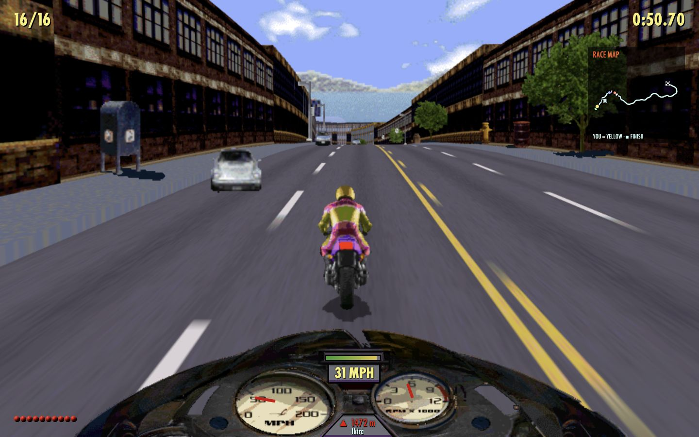

Road Rash game: a guide to browser play
Road Rash combines motorcycle racing with fighting: overtake rivals, avoid traffic and choose when to attack the rider beside you. This guide explains the browser version on roadrash.site, its race modes and what to expect before you play.
Play Road Rash online
Choose a race mode
- Race Now
- Choose a track for a quick race against computer-controlled rivals. This is the direct route into single-player racing.
- Career
- Choose a rider, earn race money and visit the bike shop. Career progression gives you a reason to return to the same courses with a faster motorcycle.
- Play with Friends
- Create a room or join a friend's invite. The host chooses the course and starts the race. Our multiplayer room guide explains the steps.
The five tracks
The track selection includes The City, Pacific Highway, Sierra Nevada, Napa Valley and The Peninsula. The City brings junctions, traffic and pedestrians; the coastal and mountain courses change the scenery and the shape of the road. Career level affects course length.
The shop groups its motorcycles into Rat, Sport and Super classes. Compare price and performance before spending your race money. Nitro is available on equipped bikes; it is not a feature of every motorcycle.
Racing and fighting share the road
A fast bike still needs room to pass. Rivals, cars, roadside objects and police affect a race, so judge the gap before overtaking. Fighting is most useful when another rider is beside you. A punch, kick or weapon swing must reach the opponent to connect.
The combat controls guide explains attack buttons, weapon use and why a swing can miss. For the wider keyboard and gamepad layout, read how to play.
Playing on PC in a browser
Open the game in a current desktop browser with JavaScript enabled. The browser downloads the game assets, so allow the first load to finish before starting a race. You do not need a Windows installer or browser plugin for this version.
The default riding controls are the arrow keys or WASD. Space punches, Enter kicks and the slash key swings an equipped weapon. If you have changed your keys, Settings → Controls shows your current assignments.
Playing on mobile
Phones use touch controls and a landscape game layout. The guide pages themselves remain readable upright. See the Android and iPhone browser guide for steering, auto acceleration and button layout options.
How this differs from the Windows game
This is an unofficial browser adaptation, not the original Windows executable. It uses browser input, touch controls, online room links and browser-based saving. It should not be treated as an exact reproduction of every Windows game rule or as an official EA release.
This page explains the version available here. It does not provide a Windows download or an Android APK.